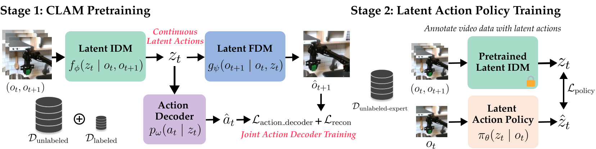
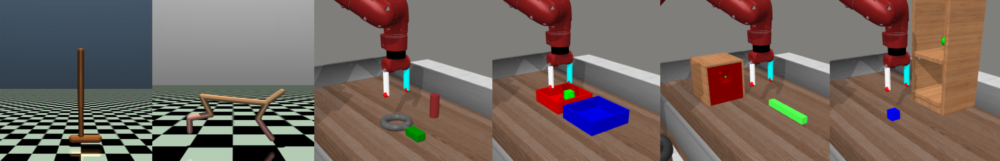
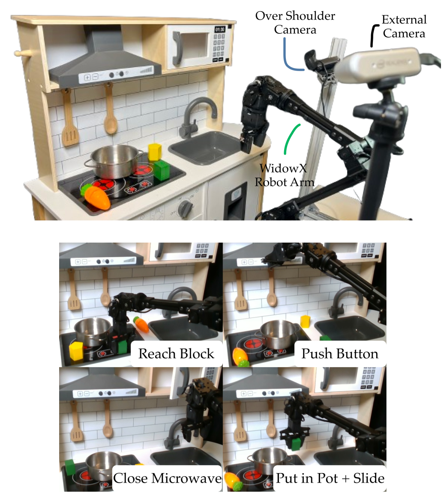
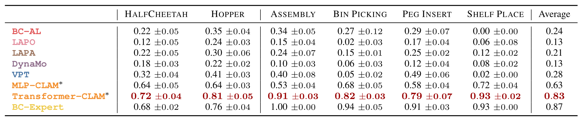
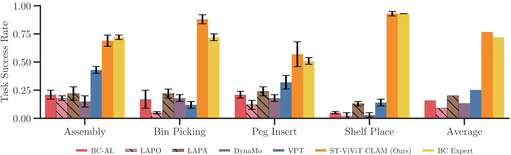
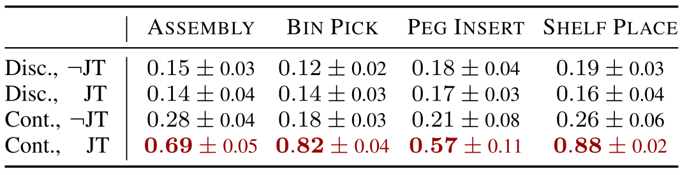
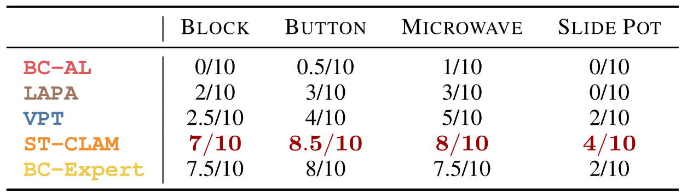

Overview
We introduce several novel contributions to the paradigm of learning latent actions from unlabeled observation data:
- We demonstrate that latent action relabeling becomes practical for high-dimensional continuous robot control when using continuous latent spaces and joint grounding.
- We demonstrate that task-agnostic play data, rather than expert teleoperation, is sufficient for grounding latent actions, dramatically reducing the cost of data collection for new tasks.
- We deploy and evaluate CLAM on a physical WidowX robot across four manipulation tasks, showing it is competitive with BC trained with privileged expert action labels without ever collecting action-labeled expert demonstrations.
Continuous Latent Action Models
CLAM consists of two stages. In Stage 1, we train a latent action model
(LAM). We then use this LAM in Stage 2 to train a latent action policy.
Stage 1 is the pretaining stage of CLAM. We assume access to a large unlabeled dataset of observations for training the latent action model (LAM).
A LAM consists of two models: a forward dynamics model (FDM) that predicts the dynamics of the environment and an inverse dynamics model
(IDM) that inverts this process by predicting the action that was performed between two subsequent observations.
The FDM learns a prediction of the next observation given an observation of the current state and the action performed in that state.
To ground the learned latent actions, we additionally learn a latent action decoder which predicts the environment action from the latent action.
After CLAM pretraining, we use the latent IDM to annotate the entire observation dataset with latent actions. We then train a latent action policy, using imitation learning. During inference time, our learned policy predicts latent actions given an observation, which the action decoder will decode into actions that are executable in the environment.
After CLAM pretraining, we use the latent IDM to annotate the entire observation dataset with latent actions. We then train a latent action policy, using imitation learning. During inference time, our learned policy predicts latent actions given an observation, which the action decoder will decode into actions that are executable in the environment.

Experimental Results
We compare CLAM to several state-of-the-art methods in both state- and image-based observations.
We show quantitative results across multiple simulated environments including locomotion tasks in DMControl (Todorov et al. 2012) and
robot manipulation tasks in the MetaWorld (Yu et al. 2020) and CALVIN (Mees et al. 2022) benchmarks shown below.

Additionally, we validate our findings in a real-world setting on a WidowX robot arm.

We compare our approach to several state-of-the-art baselines.
Since each baseline uses a different neural architecture, and some utilize pre-trained off-the-shelf
models, we normalize the general architecture and omit pre-trained and language-conditioned components.
FINDING 1: CLAM outperforms all baselines and nearly matches the performance of BC with expert data in both state- and image-based experiments.
CLAM improves upon the best baseline VPT by more than 2× average normalized return on the DMControl (locomotion) tasks and around 2−3×
success rate on the MetaWorld (manipulation) tasks.
Close Microwave
CLAM (Ours)
VPT Baseline
Push Button
CLAM (Ours)
VPT Baseline
Put Block in Pot & Slide Right
CLAM (Ours)
VPT Baseline
Reach Green Block
CLAM (Ours)
VPT Baseline

These results are consistent even in the image-based experiments shown in the table below.

FINDING 2: Continuous latent actions and joint action decoder greatly improve performance for continuous control problems.


FINDING 3: CLAM successfully learns without ever accessing labeled expert data.
CLAM Design Choices
(Left) Latent action dimension directly affects the model’s expressivity.
Increasing the latent action dimension improves the model expressivity for policy learning.
Up until a latent dimension of 4, the learned latent action space fails to be useful for imitation learning.
However, a latent dimension of 8 has sufficient capacity, achieving 57% success rate on the Assembly task.
(Right) CLAM scales with more unlabeled target task data. CLAM scales with the amount of unlabeled video data. The performance of the downstream policy improves as we annotate more trajectories using the pretrained CLAM.
(Right) CLAM scales with more unlabeled target task data. CLAM scales with the amount of unlabeled video data. The performance of the downstream policy improves as we annotate more trajectories using the pretrained CLAM.

(Left) Increasing the amount of non-expert action-labeled data improves the action decoder performance.
We vary the number of labeled trajectories for training the action decoder. While BC performance struggles to learn
from non-expert data, our method improves with more data.
(Right) We also evaluate the robustness of CLAM to varying expertise of data. We learn a better policy than BC with the same amount of labeled random trajectories. Unsurprisingly, with expert data, our method recovers an optimal policy.
(Right) We also evaluate the robustness of CLAM to varying expertise of data. We learn a better policy than BC with the same amount of labeled random trajectories. Unsurprisingly, with expert data, our method recovers an optimal policy.